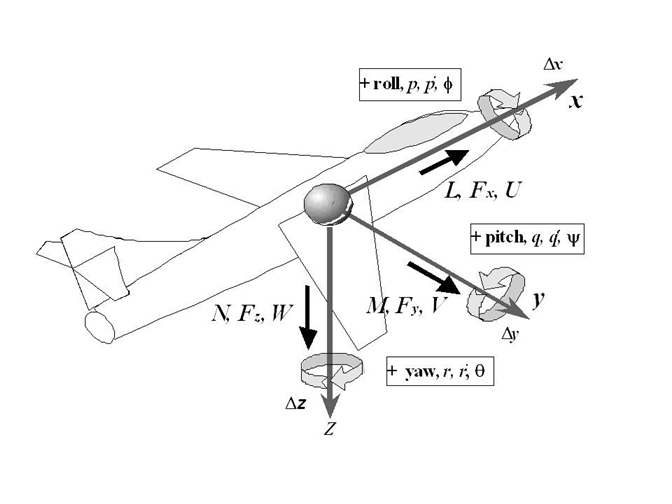
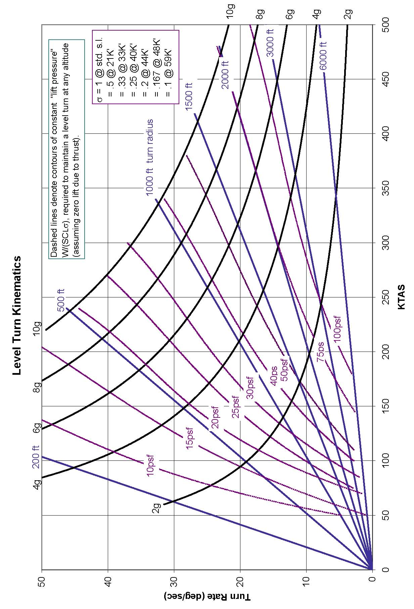

1 General Information
1.1 Unit Conversions1
(references 1.1, 1.2)
| Exponent | Prefix | Abbreviation |
|---|---|---|
| 1018 | exa | E |
| 1015 | peta | P |
| 1012 | tera | T |
| 109 | giga | G |
| 106 | mega | M |
| 103 | kilo | k |
| 102 | hecto | h |
| 10 | deka | da |
| 10-1 | deci | d |
| 10-2 | centi | c |
| 10-3 | milli | m |
| 10-6 | micro | \(\mu\) |
| 10-9 | nano | n |
| 10-12 | pico | p |
| 10-15 | femto | f |
| 10-18 | atto | a |
| Multiply | by | To Obtain | |
|---|---|---|---|
| Angles | circles | 1 | circumferences |
| circles | 12 | signs | |
| circles | 21,600 | minutes | |
| circles | 2\(\pi\) | radians | |
| circles | 360 | degrees | |
| degrees | .01111 | quadrants | |
| degrees | 3600 | seconds | |
| degrees | 60 | minutes | |
| mils (Army) | 0.05625 | degrees | |
| mils (Navy) | 0.05729 | degrees | |
| quadrants | 90 | degrees | |
| radians | 57.2958 | degrees | |
| revolutions | 360 | degrees | |
| 2 | sphere | 4\(\pi\) | steradians |
| Angular Acceleration | rev/min2 | 0.001745 | rad/sec2 |
| Angular Velocity | cycles/sec | 6.2814 | rads/sec |
| rads/sec | 0.1592 | rev/sec (cycles/sec) | |
| rads/sec | 9.549 | rpm | |
| rad/sec | 57.296 | deg/sec | |
| rpm | 0.01667 | rev/sec | |
| Area | acres | 43,560 | ft2 |
| ares | 100 | m2 | |
| barn | 10-28 | m2 | |
| centares | 1 | m2 | |
| circular mils | 7.854 x 10-7 | in2 | |
| cm2 | 100 | mm2 | |
| ft2 | 144 | in2 | |
| ft2 | 0.09290304 | m2 | |
| in2 | 6.452 | cm2 | |
| in2 | 106 | mils2 | |
| m2 | 10.76 | ft2 | |
| section | 2,589,988.1 | m2 | |
| st. mile2 | 27,780,000 | ft2 | |
| st. mile2 | 2.590 | km2 | |
| township | 93,239,572 | m2 | |
| yd2 | 9 | ft2 | |
| yd2 | 0.8361 | m2 | |
| Density | grams/cm3 | 0.03613 | pounds/in3 |
| grams/cm3 | 62.43 | pounds/ft3 | |
| kg/m3 | 16.018463 | pounds/ft3 | |
| slugs/ft3 | 515.4 | kg/m3 | |
| pounds/in3 | 1728 | pounds/ft3 | |
| slugs/ft3 | 1.94 | grams/cm3 | |
| Electrical Quantities | amperes | 0.1 | abamperes |
| amperes | 1.0365x10-5 | faradays/sec | |
| amperes | 2.998x109 | statamperes | |
| amperes.cicmil | 1.973x105 | amperes/cm2 | |
| ampere-hours | 3,600 | coulombs | |
| ampere-hours | 1.079x1013 | statcoulombs | |
| ampere turn/cm | 1.257 | gilberts/cm | |
| ampere turn/cm | 1.257 | oersteds | |
| coulombs | 0.1 | abcoulombs | |
| coulombs | 6.243x1018 | electronic charges | |
| coulombs | 1.037x10-5 | faradays | |
| coulombs | 2.998x109 | statcoulombs | |
| faradays | 26.8 | ampere-hours | |
| farads | 10-9 | abfarads | |
| farads | 106 | microfarads | |
| farads | 8.986x1011 | statfarads | |
| gausses | 1 | maxwells/cm2 | |
| gausses | 6.452 | lines/in2 | |
| gilberts | 0.7958 | ampere turns | |
| henries | 109 | abhenries | |
| henries | 1.113x10-12 | stathenries | |
| maxwells | 1 | lines | |
| oersteds | 2.998x1010 | statoersteds | |
| ohms | 109 | abohms | |
| ohms | 1.113x1012 | statohms | |
| ohm-cm | 6.015x106 | circ mil-ohms/ft | |
| volts | 108 | abvolts | |
| volts | 0.003336 | statvolts | |
| Energy & Work | Btu | 1.055x1010 | ergs |
| Btu | 1055.1 | Joules (N-m) | |
| Btu | 2.9302x10-4 | kilowatt-hours | |
| Btu | 251.99 | calories (gram) | |
| Btu | 778.03 | foot-pounds | |
| calories | 4.1868 | watt-seconds | |
| calories | 3.088 | foot-pounds | |
| electron volt | 1.519x10-22 | Btu | |
| ergs | 1 | dyne-centimeters | |
| ergs | 7.376x108 | foot-pounds | |
| foot-pounds | 1.3558 | Joules (N-m)** | |
| foot-pounds | 3.766x10-7 | kilowatt-hours | |
| foot-pounds | 5.051x10-7 | horsepower-hours | |
| hp-hours | 0.7457 | kilowatt-hours | |
| hp-hours | 2546.1 | Btu | |
| Joules | 0.23889 | calories | |
| Joules | 1 | Newton-meters | |
| Joules | 1 | watt-seconds | |
| Joules | 107 | ergs | |
| kilowatt-hours | 3.6x106 | Joules | |
| thermies | 4.1868x106 | Joules | |
| watt-seconds | 0.73756 | foot-pounds | |
| Force3 | dynes | 3.597x10-5 | ounces |
| kilograms-force | 9.80665 | Newtons | |
| kiloponds | 9.80665 | Newtons | |
| kip (kilopound-force) | 4,448.221 | Newtons | |
| Newtons | 0.224808931 | pounds | |
| Newtons | 100,000 | dynes | |
| ounces | 20 | pennyweights | |
| ounces (troy) | 480 | grains | |
| Fuel4 | gal | 5.8 | lbs (U.S. AV gas) |
| gal | 7.5 | lbs ( U.S. oil) | |
| Liter (jet A) | 0.812 | kilograms | |
| Liter (jet A) | 1.794 | pounds | |
| Illumination | candles | 1 | lumens/steradian |
| candles/cm2 | \(\pi\) | lamberts | |
| candlepower | 12.566 | lumens | |
| foot-candles | 1 | lumens/ft2 | |
| foot-candles | 10.764 | lux | |
| foot-lamberts | 1 | lumen/ft2 | |
| lamberts | 295.72 | candles/ft2 | |
| lamberts | 929.03 | lumens/ft2 | |
| lumens | 0.001496 | watts | |
| lumens/in2 | 1 | fots | |
| lumens/m2 | 1 | lux | |
| lux | 1 | meter-candles | |
| lux | 0.0001 | fots | |
| meter-candles | 1 | lumens/m2 | |
| millilamberts | 0.2957 | candles/ft2 | |
| millilamberts | 0.929 | foot-lamberts | |
| milliphots | 0.929 | foot-candles | |
| milliphots | 0.929 | lumens/ft2 | |
| milliphots | 10 | meter-candles | |
| Length | ångströms | 10-10 | meters |
| astronomical units | 1.496x1011 | meters | |
| cable lengths | 120 | fathoms | |
| caliber | 0.01 | inches | |
| cubit | 0.4572 | meters | |
| fermi | 10-15 | meters | |
| fathoms | 6 | feet | |
| feet | 12 | inches | |
| 5 | feet | 0.3048 | meters |
| furlongs | 40 | rods | |
| hands | 4 | inches | |
| inches | 2.54 | cm | |
| kilometers | 3281 | feet | |
| kilometers | 0.53996 | nautical miles | |
| leagues (U.S.) | 3 | nautical miles | |
| light years | 5.88x1012 | statute miles | |
| links (engnr’s) | 12 | inches | |
| links (srvyr’s) | 7.92 | inches | |
| meters | 3.28084 | feet | |
| meters | 39.370079 | inches | |
| microns | 10-6 | meters | |
| mils | 10-3 | inches | |
| nautical miles | 1.15078 | statute miles | |
| 6 | nautical miles | 1,852 | meters |
| nautical miles | 6,076.115486 | feet | |
| paces | 0.762 | meters | |
| parsec | 1.9163x1013 | statute miles | |
| perch | 5.0292 | meters | |
| pica (printers) | 0.0042175176 | meters | |
| point (printers) | 0.0003514598 | meters | |
| pole (=rod) | 5.0292 | meters | |
| skein | 109.728 | meters | |
| statute miles | 5,280 | feet | |
| statute miles | 1.609344 | kilometers | |
| statute miles | 8 | furlongs | |
| yards | 3 | feet | |
| Linear Acceleration | feet/sec2 | 1.09728 | kilometers/hr/sec |
| feet/sec2 | 0.3048 | meters/sec2 | |
| feet/sec2 | 0.6818 | mph/sec | |
| g | 32.174049 | feet/sec2 | |
| g | 9.80665 | meters/sec2 | |
| gals (Galileo) | 0.01 | meters/sec2 | |
| knots/sec | 1.6878 | feet/sec2 | |
| meters/sec2 | 3.6 | kilometers/hr/sec | |
| mph/sec | 0.447 | meters/sec2 | |
| mph/sec | 1.609 | kilometers/hr/sec | |
| Mass | carats | 200 | milligrams |
| grams | 0.035274 | ounces | |
| grains | 6.479891x10-5 | kilograms | |
| hundredweight (long or Imperial) | 50.80 | kilograms | |
| hundredweight (short) | 45.359237 | kilograms | |
| kilograms | 0.06852 | slugs | |
| kilograms | 6.024x1026 | atomic mass units | |
| kilograms | 2.2046 | pounds | |
| ounces (avd) | 28.349523125 | grams | |
| ounces (troy) | 31.1034768 | grams | |
| pounds (mass) | 1 | pounds (force) | |
| pounds (mass) | 0.45359237 | kilograms | |
| pounds (mass) | 0.031081 | slugs | |
| scruples (apoth) | 0.0012959782 | kilograms | |
| slugs | 32.174 | pounds | |
| slugs | 14.594 | kilograms | |
| tons (long) | 1016.047 | kilograms | |
| tons (assay) | 0.02916 | kilograms | |
| tons (metric) | 1000 | kilograms | |
| tons (short) | 907.1847 | kilograms | |
| Moments of Inertia | gram-cm2 | 0.737x10-7 | slug-ft2 |
| pound-ft2 | 0.031081 | slug-ft2 | |
| slug-in2 | 0.0069444 | slug-ft2 | |
| slug-ft2 | 1.3546 | kg-m2 | |
| slug-ft2 | 32.174 | pound-ft2 | |
| slug-ft2 | 12.00 | pound-inch-sec2 | |
| slug-ft2 | 192.00 | ounce-inch-sec2 | |
| Power | btu/min | 0.01758 | kilowatts |
| calories(kg)/min | 3087.46 | foot-pounds/min | |
| ergs/sec | 7.376x10-8 | foot-pounds/sec | |
| ft(lbs)/min | 2.260x10-5 | kilowatts | |
| ft(lbs)/sec | 0.07712 | btu/min | |
| ft(lbs)/sec | 1.356 | watts | |
| horsepower | 550 | ft(lb)/sec | |
| horsepower | 33,000 | ft(lbs)/min | |
| horsepower | 10.69 | calories (kg)/min | |
| horsepower | 745.7 | watts | |
| horsepower (metric) | 735.5 | watts | |
| horsepower | 1.1014 | horsepower (metric) | |
| kilowatts | 1.341 | horsepower | |
| watts | 107 | ergs/sec | |
| watts | 1 | Joules/sec | |
| Pressure | atmospheres | 14.696 | pounds/in2 |
| atmospheres | 29.92 | inches of Hg | |
| atmospheres | 760 | mm of Hg | |
| bars | 106 | dynes/cm2 | |
| bars | 29.52 | inches of Hg | |
| barye | 0.1 | Newtons/m2 | |
| dynes/cm2 | 10 | Newtons/m2 | |
| inches of H2O | 5.20237 | pound/ft2 | |
| inches of Hg | 70.72619 | pounds/ft2 | |
| inches of Hg | 0.491154 | pounds/in2 | |
| inches of Hg | 13.595 | inches of H2O | |
| kiloPascals | 100 | bars | |
| hectoPascals | 1 | millibars | |
| millibars | 0.02953 | inches of Hg | |
| mm of Hg | 0.019337 | pounds/in2 | |
| mm of Hg | 133.32 | Newtons/m2 | |
| Pascals | 1 | Newton/m2 | |
| pieze | 1000 | Newtons/m2 | |
| pounds/ft2 | 0.01414 | inches of Hg | |
| pounds/ft2 | 47.88 | Newtons/m2 | |
| pounds/in2 | 2.036 | inches of Hg | |
| pounds/in2 | 27.681 | inches of H2O | |
| pounds/in2 | 6894.75728 | Pascal | |
| torrs | 133.32 | Newtons/m2 | |
| Temperature | Kelvin | Celsius + 273.15 | |
| Rankine | Fahrenheit + 459.67 | ||
| Celsius | (Fahrenheit - 32) * 5/9 | ||
| Fahrenheit | (9/5 * Celsius) + 32 | ||
| Time | days (solar) | 24 | hours |
| days (sidereal) | 23.934 | hours | |
| days (solar) | 1.0027 | days (sidereal) | |
| hours | 60 | minutes | |
| minutes | 60 | seconds | |
| months (sidereal) | 27d + 7hr + 43min + 11.47sec | ||
| months (lunar) | 29d + 12hr + 44min + 2.78sec | ||
| year | 365.24219879 | days | |
| Torque | foot-pounds | 1.3558 | Newton-meters |
| foot-pounds | 0.1383 | kilogram-meters | |
| ounce-inches | 72.008 | gram-centimeters | |
| pound-inches | 1129800 | dyne-centimeters | |
| Velocity | inches/sec | 0.0254 | meters/sec |
| km/hr | 0.621371 | mph | |
| km/hr | 0.9113 | feet/sec | |
| knots | 1.68781 | feet/sec | |
| knots (kts) | 1.15078 | mph | |
| knots (kts) | 1.852 | km/hr | |
| knots (kts) | 0.51444 | meters/sec | |
| meters/sec | 3.281 | ft/sec | |
| meters/sec | 3.6 | km/hr | |
| meters/sec | 196.85 | feet/min | |
| mph | 1.466667 | feet/sec | |
| Viscosity | centistokes | 10-6 | m2/sec |
| ft2/sec | 0.0929 | m2/sec | |
| pound sec/ ft2 | 47.880258 | Newton secs/m2 | |
| poise | 0.1 | Newton secs/m2 | |
| rhe | 10 | m2/Newton second | |
| Volume | acre-feet | 43,560 | ft3 |
| acre-feet | 1,233 | m3 | |
| acre-feet | 3.259x105 | gals (U.S.) | |
| barrels | 31.5 | gals (U.S.) | |
| board-feet | 144 | in3 | |
| bushels | 1.244 | ft3 | |
| bushels | 32 | quarts (dry) | |
| bushels | 4 | pecks | |
| cm3 | 0.001 | liters | |
| cm3 | 0.03381 | fluid ounces | |
| cm3 | 0.06102 | in3 | |
| cord-feet | 4x4x1 | ft3 | |
| cords | 128 | ft3 | |
| cups | 0.5 | pints (liquid) | |
| dram (fluid) | 3.69669x10-6 | m3 | |
| ft3 | 0.0283167 | m3 | |
| ft3 | 1728 | in3 | |
| ft3 | 28.32 | liters | |
| ft3 | 7.481 | gals (U.S.) | |
| gals (Imperial) | 1.2009 | gals (U.S.) | |
| gals (Imperial) | 277.42 | in3 | |
| gals (U.K.) | 4546.1 | cm3 | |
| gals (U.S.) | 231 | in3 | |
| gals (U.S.) | 0.003785 | m3 | |
| gals (U.S.) | 3.785 | liters | |
| gals (U.S.) | 4 | quarts (liquid) | |
| gals (U.S.) | 0.0238095 | barrels (U.S.) | |
| gills | 7.219 | in3 | |
| hogshead | 2 | barrels | |
| in3 | 16.39 | cm3 | |
| liters | 0.02838 | bushels | |
| liters | 0.9081 | quarts (dry) | |
| liters | 1.057 | quarts (liquid) | |
| liters | 1000 | cm3 | |
| liters | 61.03 | in3 | |
| m3 | 1.308 | yd3 | |
| m3 | 1000 | liters | |
| m3 | 264.2 | gals (U.S.) | |
| m3 | 35.314667 | ft3 | |
| mil-feet (circ.) | 0.0001545 | cm3 | |
| ounces (U.K.) | 28.413 | cm3 | |
| ounces (U.S.) | 29.574 | cm3 | |
| pecks | 8 | quarts (dry) | |
| pecks | 8.81 | liters | |
| perches | 0.7008 | m3 | |
| perches | 24.75 | ft3 | |
| pints (dry) | 33.60 | in3 | |
| pints (liquid) | 28.88 | in3 | |
| pints (liquid) | 4 | gals | |
| quarts (dry) | 1.164 | quarts (liquid) | |
| quarts | 2 | pints | |
| register tons | 100 | ft3 | |
| shipping ton (U.S.) | 40 | ft3 | |
| shipping ton (Br.) | 42 | ft3 | |
| steres | 1000 | liters | |
| tablespoons | 0.0625 | cups | |
| teaspoons | 0.3333 | tablespoons |
1.2 Greek Alphabet
| Uppercase | Lowercase | Name | Say | ||
|---|---|---|---|---|---|
| \(Α\) | Α | \(\alpha\) | \alpha | Alpha | æl-fə |
| \(Β\) | Β | \(\beta\) | \beta | Beta | bei-tə |
| \(\Gamma\) or \(\varGamma\) | \Gamma or \varGamma | \(\gamma\) | \gamma | Gamma | gæ-mə |
| \(\Delta\) or \(\varDelta\) | \Delta or \varDelta | \(\delta\) | \delta | Delta | del-tə |
| \(Ε\) | Ε | \(\epsilon\) or \(\varepsilon\) | \epsilon or \varepsilon | Epsilon | eps-ill-aan |
| \(Ζ\) | Ζ | \(\zeta\) | \zeta | Zeta | zei-tə |
| \(Η\) | Η | \(\eta\) | \eta | Eta | ei-tə |
| \(\Theta\) or \(\varTheta\) | \Theta or \varTheta | \(\theta\) or \(\vartheta\) | \theta or \vartheta | Theta | thei-tə |
| \(Ι\) | Ι | \(\iota\) | \iota | Iota | aai-oh-tə |
| \(Κ\) | Κ | \(\kappa\) or \(\varkappa\) | \kappa or \varkappa | Kappa | kæ-pə |
| \(\Lambda\) or \(\varLambda\) | \Lambda or \varLambda | \(\lambda\) | \lambda | Lambda | læm-də |
| \(M\) | M | \(\mu\) | \mu | Mu | myoo |
| \(Ν\) | Ν | \(\nu\) | \nu | Nu | nyoo |
| \(\Xi\) or \(\varXi\) | \Xi or \varXi | \(\xi\) | \xi | Xi | ksaai |
| \(Ο\) | Ο | \(ο\) | ο | Omicron | oh-mə-kraan |
| \(\Pi\) or \(\varPi\) | \Pi or \varPi | \(\pi\) or \(\varpi\) | \pi or \varpi | Pi | paai |
| \(P\) | P | \(\rho\) or \(\varrho\) | \rho or \varrho | Rho | roh |
| \(\Sigma\) or \(\varSigma\) | \Sigma or \varSigma | \(\sigma\) or \(\varsigma\) | \sigma or \varsigma | Sigma | sig-mə |
| \(Τ\) | Τ | \(\tau\) | \tau | Tau | taa’u |
| \(\Upsilon\) or \(\varUpsilon\) | \Upsilon or \varUpsilon | \(\upsilon\) | \upsilon | Upsilon | oops-ill-on |
| \(\Phi\) or \(\varPhi\) | \Phi or \varPhi | \(\phi\) or \(\varphi\) | \phi or \varphi | Phi | faai |
| \(Χ\) | Χ | \(\chi\) | \chi | Chi | kaai |
| \(\Psi\) or \(\varPsi\) | \Psi or \varPsi | \(\psi\) | \psi | Psi | psaai |
| \(\Omega\) or \(\varOmega\) | \Omega or \varOmega | \(\omega\) | \omega | Omega | oh-meg-ə |
1.3 Greek Symbols Used for Aircraft
| Symbol | Used For |
|---|---|
| \(\alpha\) | angle of attack (degrees or radians) |
| \(\alpha_{\tau}\) | tail angle of attack |
| \(\beta\) | angle of sideslip (degrees) |
| \(\gamma\) | flight path angle relative to horizontal |
| \(\gamma\) | specific heat ratio (1.4 for air) |
| \(\delta\) | relative pressure ratio (\(\frac{P_a}{P_0}\)) |
| \(\delta_a\) | aileron deflection angle |
| \(\delta_r\) | rudder deflection angle |
| \(\delta_e\) | elevator deflection angle |
| \(\varepsilon\) | downwash angle at tail (degrees) |
| \(\zeta\) | damping ratio |
| \(\eta\) | efficiency |
| \(\theta\) | body axis/pitch angle |
| \(\theta\) | relative temperature ratio, Ta/To |
| \(\iota\) | angle of incidence |
| \(\iota_F\) | thrust angle of incidence |
| \(\iota_T\)* | horizontal tail angle of incidence |
| \(\lambda\) | pressure lag constant |
| \(\Lambda\) | wing sweep angle |
| \(\mu\) | coefficient of absolute viscosity =\(\rho \nu\) |
| \(\mu\) | Mach cone angle |
| \(\nu\) | kinematic viscosity =\(\mu / g\) |
| \(\pi\) | nondimensional parameter |
| \(\rho\) | density |
| \(\rho_a\) | ambient air density |
| \(\rho_0\) | standard atmospheric density (slugs/ft^3 ) |
| \(\sigma\) | air density ratio \((\rho_{\alpha} / \rho_o)\) |
| \(sigma_{cr}\) | critical density |
| \(\tau\) | shear stress (pounds per square inch) psi |
| \(\tau_R\) | Roll Mode Time Constant (sec) |
| \(\phi\) | bank angle (degrees) |
| \(\psi\) | aircraft heading (degrees) |
| \(\omega\) | frequency |
| \(\omega\) | rotational velocity (radians per second) |
| \(\omega_d\) | damped natural frequency |
| \(\omega_n\) | natural undamped frequency |
1.4 Common Subscripts
| Subscript | Meaning |
|---|---|
| a | aileron |
| a | ambient |
| alt | at test altitude |
| avg | average |
| c | calibrated |
| e | elevator |
| e | equivalent |
| E | endurance leg of mission |
| F | final |
| I | initial |
| i | inbound leg of mission |
| i | indicated |
| ic | instrument corrected |
| l | subscript for coefficient of rolling moment |
| m | mission conditions |
| m | pitching moment |
| n | yawing moment |
| O | outbound leg of mission |
| o | sea-level standard day |
| o | sea level |
| r | reserve leg of mission |
| r | rudder |
| S | standard day |
| s | standard day at altitude |
| SL | sea level |
| T | True |
| t | test day |
1.5 Common Abbreviations (raw)
| Abbreviation | Meaning |
|---|---|
| a | lift curve slope |
| a | linear acceleration (ft/sec2 or m/sec2) |
|a |speed of sound|
|A/A |air-to-air|
|a/c |aircraft|
|AAA |anti aircraft artillery|
|AC |aerodynamic center|
|ac |alternating current|
|ACM |air combat maneuvering|
|A/D |analog to digital|
|ADC |air data computer|
|ADC |analog-to-digital converter|
|ADF |automatic direction finder|
|ADI |attitude direction indicator|
|AFMC |Air Force Materiel Command|
|AFOTEC |Air Force Operational Test and Evaluation Center|
|A/G |air-to-ground|
|AGL |above ground level|
|AHRS |attitude heading reference system|
|AM |amplitude modulation|
|AOA |angle of attack|
|AOED |age of ephemeris data|
|APU |auxiliary power unit|
|AR |air refuel (mode of flight)|
|AR |aspect ratio = b2 / S|
|ARDP |advanced radar data processor|
|ARSP |advanced radar signal processor|
|ASPJ |airborne self protection jammer|
|ATC |air traffic control|
|avg |average|
|ax |longitudinal acceleration|
|ay |lateral acceleration|
|AZ |azimuth|
|b |span of wing (feet)|
|B/N |bombardier/navigator|
|bbl |barrel|
|BHP |brake horsepower|
|BICOMS |bistatic coherent measurement system|
|BID |bus interface device|
|BIT |built-in test|
|BSFC |brake specific fuel consumption|
|Btu |British thermal unit|
|BW |bandwidth|
|oC |degrees centigrade...see T
|c |brake specific fuel consumption (BSFC)|
|c |speed of light in a vacuum (186,282 miles/sec = 299,792,500 \[m/s\])|
|c |mean aerodynamic chord (MAC) of a wing|
|C/A |coarse acquisition|
|C/No |carrier to noise ratio|
|CADC |central air data computer|
|CARD |cost analysis requirement document|
|CD |coefficient of drag|
|CDi |induced drag coefficient|
|CDo |zero lift drag coefficient (also parasitic drag coefficient for symmetric wing)|
|CDI |course deviation indicator|
|CDMA |code division multiplex access|
|CDR |critical design review|
|CDRL |contracts data requirement list|
|CDU |control display unit|
|CEA |circular error average|
|CEP |circular error probable|
|Cf |coefficient of friction|
|CFE |contractor furnished equipment|
|CFT |conformal fuel tank|
|cg |center of gravity (normally in % MAC)|
|CH |hinge moment coefficient|
|cine |cinetheodolite|
|Cl |rolling moment coefficient, airfoil section lift coefficient|
|CL |lift coefficient|
|CLHQ |closed loop handling qualities|
|Clp |roll damping coefficient|
|Clr |roll moment due to yaw rate coefficient|
|Cm |pitching moment coefficient|
|CM |moment coefficient|
|cm |centimeters|
|cos |cosine|
|cot |cotangent|
|\(C_{l \beta}\) |(dihedral) rolling moment due to sideslip|
|\(C_{l \delta a}\) |aileron power coefficient|
|\(Cm_q\) |pitch damping coefficient|
|\(Cm_{\alpha}\) |longitudinal static stability coefficient|
|\(Cm_{\delta e}\) |elevator power coefficient|
|\(Cn\) |yawing moment coefficient|
|\(Cn_r\) |yaw damping coefficient|
|cnst |constant|
|\(Cn_{\beta}\) |directional stability coefficient|
|\(Cn_{\delta a}\) |adverse yaw coefficient|
|\(Cn_{\delta r}\) |rudder power coefficient|
|COTS |commercial, off–the-shelf|
|CP |center of pressure|
|\(C_P\) |propeller power coefficient|
|CPU |central processing unit|
|\(c_r\) |wing root chord|
|CRM |crew resource management|
|\(c_t\) |wing tip chord|
|CTF |combined test force|
|CY |calendar year|
|\(C_Y\) |side force coefficient|
|\(C_{Y_{\beta}}\) |side force due to sideslip coefficient|
|\(C_{Y_{\delta r}}\) |side force due to rudder coefficient|
|D |diameter|
|D |drag|
|D/A |digital/analog|
|DAC |digital to analog converter|
|DAPS |data acquisition and processing system|
|DARPA |Defense Advanced Research Projects Agency|
|db |decibel|
|DC |direct current|
|deg |degrees|
|DG |directional gyro|
|DGPS |differential GPS|
|DMA |Defense Mapping Agency|
|DME |distance measuring equipment|
|DoD |Department of Defense|
|DOP |dilution of precision|
|DSN |defense switched network|
|DT |development test|
|DTC |data transfer cartridge|
|DTIC |Defense Technical Information Center|
|e |Oswald efficiency factor|
|\(e\) |natural mathematical constant = 2.718281828459|
|E |energy|
|E |lift-to-drag ratio (\(C_L / C_D\), \(L/D\))|
|EAS |equivalent airspeed|
|EC |electronic combat|
|ECCM |electronic counter countermeasures|
|ECM |electronic countermeasures|
|ECP |engineering change proposal|
|ECS |environmental control system|
|EGT |exhaust gas temperature|
|EL |elevation|
|ELINT |electronic intelligence|
|ELV |expendable launch vehicle|
|EM |electromagnetic|
|\(E_{\rm{max}}\) |maximum lift-to-drag ratio|
|EMC |electromagnetic compatibility|
|EMI |electromagnetic interference|
|EMP |electromagnetic pulse|
|EO |electro optical|
|EOM |equations of motion|
|EPR |engine pressure ratio|
|EPROM |electrically programmable read only memory|
|Es |specific energy|
|ESA |European Space Agency|
|ESD |Electronic Systems Division|
|ESHP |equivalent shaft horsepower|
|ETA |estimate time of arrival|
|ETE |estimate time en-route|
|EW |early warning|
|EW |electronic warfare|
|oF |degrees Fahrenheit|
|f |frequency...hertz (originally cycles per second)|
|F.S. |fuselage station|
|\(F_a\) |aileron force|
|FAA |Federal Aviation Administration|
|FAR |Federal Aviation Regulation|
|FCF |functional check flight|
|FDC |flight data computer|
|\(F_e\) |elevator force|
|\(F_{ex}\) |excess thrust|
|\(F_g\) |gross thrust|
|FL |flight level|
|FLIP |flight information publication|
|FLIR |forward-looking infrared|
|FM |frequency modulation|
|FMC |fully mission capable|
|FMS |flight management system|
|FMS |foreign military sales|
|Fn |net thrust|
|\(Fn / \delta\) |corrected thrust parameter|
|FOM |figure of merit|
|FOT&E |follow-on test & evaluation|
|FOUO |for official use only|
|FOV |field of view|
|fpm |feet per minute|
|fps |feet per second|
|FQT |formal qualification test|
|Fr |rudder force|
|FRD |functional requirements document|
|FRL |fuselage reference line|
|FRL |force, rudder, left|
|FRR |force, rudder, right|
|FRR |flight readiness review|
|FSD |full scale development|
|FSI |full scale integration|
|ft |feet|
|ft-lb |English unit of work...foot-pound...|
|fwd |forward|
|FY |fiscal year|
|g |acceleration due to gravity at altitude|
|G |gravitational constant = 6.6732x10-11 \[N m^2^/kg^2^\]|
|GAO |Government Accounting Office|
|GCA |ground control approach|
|GCI |ground controlled intercept|
|GDOP |geometric dilution of precision|
|GMT |Greenwich mean time|
|go |standard acceleration due to gravity (sea level, 46 deg latitude)|
|GPS |global positioning system|
|GS |ground speed|
|GSI |glide slope indicator|
|h |% MAC|
|H |altitude|
|HARM |high-speed anti-radiation missile|
|Hc |calibrated altitude (assumed to be pressure altitude in flight test)|
|HD |density altitude|
|HDDR |high density digital recorder|
|HDOP |horizontal dilution of precision|
|HF |high frequency|
|Hg |mercury|
|Hi |indicated altitude|
|hm |stick-fixed maneuver point (%MAC)|
|h'm |stick-free maneuver point (%MAC)|
|hn |stick-fixed neutral point (%MAC)|
|h'n |stick-free neutral point (%MAC)|
|hp |horsepower|
|hr |hour|
|hrs |hours|
|HSI |horizontal situation indicator|
|HUD |head-up display|
|HV |host vehicle|
|Hz |hertz|
|I/O |input/output|
|IAS |indicated airspeed|
|IAW |in accordance with|
|ICAO |International Civilian Aviation Organization|
|ICU |interface computer unit|
|ICBM |intercontinental ballistic missile|
|IFF |identification friend or foe|
|IFR |instrument flight rules|
|ILS |instrument landing system|
|IMC |instrument meteorological conditions|
|IMN |indicated Mach number|
|IMU |inertial measuring unit|
|in |inch|
|INS |inertial navigation system|
|INU |inertial navigation unit|
|IOC |initial operational capability|
|IOT&E |initial operational test & evaluation|
|IUGG |International Union of Geodesy and Geographics|
|Ix, Ix, Iz |moments of inertia|
|Ixy, Ixz, Iyz |products of inertia|
|J |joules energy, (Newton-Meter)|
|J |propeller advance ratio|
|J&S |jamming and spoofing|
|JCS |Joint Chiefs of Staff|
|K |Kelvin (absolute temperature)|
|K |temperature probe recovery factor|
|K, k1 |constants|
|KCAS |knots calibrated airspeed|
|KEAS |knots equivalent airspeed|
|kg |kilogram, metric unit of mass|
|KIAS |knots indicated airspeed|
|KISS |keep it simple, stupid|
|km |kilometer|
|KTAS |knots true airspeed|
|kt |knots|
|L |Lift (lbs)|
|l |length|
|L |rolling moment|
|L/D |Lift-to-drag ratio|
|LANTIRN |low altitude navigation and targeting IR for night|
|lat |lateral|
lb pound
lbf English unit of force, often just lb (pound)
lbm English unit of mass, often just lb (slug)
LCC life cycle cost
LCD liquid crystal display
LED light emitting diode
LLH latitude, longitude, height
ln natural log, log to the base e
LO low observables
Log common log, to the base 10
LOS line of sight
lt distance from cg to tail's aerodynamic cent
Lδa rolling moment due to aileron deflection
M moment (ft-lbs)
M Mach number
m mass
m meter (length)
M pitching moment
MAG magnetic
MAP manifold pressure
mb millibar
MCA minimum crossing altitude
Mcr critical Mach number
Md drag divergence Mach number
Mac mean aerodynamic cord
MGC mean geometric chord
MHz megahertz
mHZ millihertz
Mic instrument-corrected Mach number
MilSpec military specification
MIL-STD military standard (publication)
min minute (time)
Mm millimeters
MOA memorandum of agreement
MOE measure of effectiveness
MOP measures of performance
MOU memorandum of understanding
MP manifold pressure
MSL mean sea level
MTBF mean time between failures
MTTR mean time to repair
MX maintenance
N newton (force)
N rotational speed (RPM)
n load factor (g's)
N yawing moment
N1 low pressure compressor speed
N2 high pressure compressor speed
NACA National Advisory Committee for Aeronautics
NADC Naval Air Development Center
NASA National Aeronautics and Space Administration
NAV navigation
NED North, East, Down
NM, nm nautical mile (6080 feet)
NOE nap-of-the-earth
NOFORN not releasable to foreign nationals
NOTAM notice to airmen
NRC National Research Council (Canada)
NWC Naval Weapons Center
Nx longitudinal load factor (g's)
Ny lateral load factor (g's)
Nz normal load factor (g's)
OAT outside air temperature
OAT on aircraft test
OEI One engine inoperative
OPR Office of Primary Responsibility
OSD Office of the Secretary of Defense
OT&E operational test & evaluation
p aircraft roll rate (degrees/sec)
P pressure (N/m2 ,pounds per square inch)
Pa ambient pressure
PCM pulse code modulation
P-code precision code
PD pulse Doppler
PDM pulse duration modulation
PGM precision guided munitions
PIO pilot induced oscillations
Piw total thrust horsepower required
Pk probability of kill
PLF power for level flight
Po standard atmospheric pressure (2116.22 lb/ft2 )
POC point of contact
Pp pitot pressure
ppm parts per million
Prop propeller
Ps static pressure
PS pulse search
psf pounds per square foot
psi pounds per square inch
PT total pressure
PW pulse width
Q or q dynamic pressure = 0.5ρV 2
q aircraft pitch rate
Q engine torque
qc impact pressure (Pt − Pa)
oR degrees Rankine = oF + 459.67
R perfect gas constant = 8314.34 \[J/kmol K\]
r aircraft yaw rate (degrees/sec)
R earth radius
R range
R&D research and development
R&M reliability and maintainability
R/C rate of climb
rad radians
Radar radio detection and ranging
RAF resultant aerodynamic force
RAM radar absorbing material
RAT ram air turbine
RCS radar cross section
Re Reynolds number (dimensionless)
REP range error probable
RF range factor
RLG ring laser gyro
rms root mean square
RNG range
ROC rate of climb
ROC required obstacle clearance
RPM revolutions per minute (a.k.a. N)
R/T receiver/transmitter
RTO Rejected/refused takeoff
RTO responsible test organization
S wing area (ft2 or m2)
Sa horizontal distance between liftoff and specified height or between specified height and touch down.
SA selective availability
SA situational awareness
SE specific endurance
sec seconds (time or angle)
SFC specific fuel consumption
Sg ground roll distance
SHP shaft horsepower
SI international system of units
SIGINT signal intelligence
sin sine
SL sea level
SLAM standoff land attack missile
SLR side-looking radar
S/N serial number
S/N signal -to-noise ratio
SOF special operations forces
SOW stand-off weapon
SR specific range
SRB safety review board
ST tail area
std standard
ST total takeoff or landing distance (Sa + Sg)
STOL short takeoff and landing
STOVL short takeoff and vertical landing
T period of oscillation
T temperature
t thickness
T, t time (sec)
t/c thickness-to-chord ratio
Ta ambient temperature
TACAN tactical air navigation
tan tangent
Tas standard temperature at altitude
TAS true airspeed
TBD to be determined
TD touchdown
TED trailing edge down
TEL trailing edge left
TEMP test and evaluation master plan
TER trailing edge right
TEU trailing edge up
TF terrain following
THP Thrust Horsepower
THPalt horsepower available at altitude
THPmax maximum horsepower available
THPmin minimum horsepower required
THPSL horsepower required at sea level
TIT turbine inlet temperature
TM telemetry
TMN true Mach number
T/O takeoff
To standard sea level temperature (59.0 oF, 15 oC)
TO technical order
TRB technical review board
TRD technical requirements document
TRP technical resources plan
TSFC thrust specific fuel consumption
TSPI time, space, position information
Tt total temperature
TV television
T/W thrust to weight ratio
TWT track while scan
TWT traveling wave tube
u velocity along aircraft's x-axis
UAV uninhabited aerial vehicle
UHF ultra high frequency
UPT undergraduate pilot training
USA US Army
USAF US Air Force
USCG US Coast Guard
USMC US Marine Corps
USN US Navy
UT universal time
UV ultraviolet
v velocity along aircraft's lateral axis
VH horizontal tail volume coefficient
VV vertical tail volume coefficient
V1 takeoff decision speed
V2 takeoff safety speed
VA design maneuvering speed
VAC volts AC
Vb buffet airspeed
VB design speed for max gust intensity
Vbr velocity for best range
Vc calibrated airspeed
VD design diving speed
VDC volts DC
VDOP vertical dilution of precision
Ve equivalent velocity
VFE maximum flap extended speed
VFR visual flight rules
Vg ground speed
VHF very high frequency
Vi indicated airspeed
Vic indicated airspeed corrected for instrument error
Viw velocity at sea level std day and std weight
VLE max speed with landing gear extended
VLO max speed while operating landing gear
VLOF lift off speed
VLSIC very large scale integrated circuit
Vmc minimum directional control speed
VMC visual meteorological conditions
Vmca minimum directional control speed in the air
Vmcg minimum directional control speed on the ground
Vmo/Mmo maximum operating limit speed
Vmu minimum unstick speed
VNE never exceed velocity
Vno max structural cruising speed
Vopt optimum velocity for endurance flight
VOR VHF omni-directional range
VORTAC VHF omni-directional range Tactical Air Navi gation
VPmin velocity for minimum power
VPmin,SL velocity for minimum power at sea level
VR rotation speed
VS stall speed
VS0 stall speed in landing configuration
VS1 stall speed in some defined configuration
VSTOL vertical/short takeoff and landing
VT true airspeed
VTOL vertical takeoff & landing
VVI vertical velocity indicator
VW wind velocity
VX speed for best angle of climb
VY speed for best rate of climb
W weight
w component of velocity along aircraft's Z-axis
WDL weapon data link
W/δ weight-to-pressure ratio
Wf fuel weight
WGS-84 World Geodetic System, 1984
WI watch item
WOD word of day
WOW weight on wheels
WPT waypoint
wrt with respect to
, corrected fuel flow parameter
W/S wing loading
Wf fuel flow (lb/hr)
x aircraft longitudinal axis,
a line running through the nose & tail
Xac distance from leading edge to aerodynamic cen ter
Xlink cross link
y aircraft lateral axis, a line running the wingtips
Y force along y-axis
Y-code encrypted P-code
z aircraft vertical or yaw axis,
a line perpendicular to the longitudinal and lat eral axes
∆Hic altimeter instrument correction
∆Hpc altimeter position error correction
∆Pp pitot pressure error
∆Ps static pressure error
∆Vc scale attitude correction to airspeed
∆Vic instrument correction to airspeed indicator
∆Vpc correction for airspeed position error
∞ infinity, or freestream conditions
1.6 Sign Conventions (raw)
(reference 1.8)
Editor’s note There is near unanimous agreement on most sign conventions except for pilot inputs and control surface deflections. Although individual organizations generally are consistent in-house, confusion often arises when trying to mathematically translate inputs & deflections from one organization to another. This section documents the generally accepted “body axes” sign conventions then discusses the rationale for several viewpoints addressing the “inputs & deflections” debate. Below is the SFTE sign convention.
Wind Axes Sign Convention
Winds are listed according to the direction they are coming from. Airports refer winds to magnetic North while winds at altitude are typically referred to true North. Headwind is true airspeed minus ground speed. (Vw=VT-Vg).
Body Axes Sign Convention
The generally accepted body axes sign convention is based on the establishment of a three-dimensional axis system with the following properties:
1. It is right-handed orthogonal
2. Its origin is at the vehicle's reference center of gravity (defined by builder).
3. The axis system moves with the airframe.

Translational displacements, rates, accelerations, & forces are positive along the positive body axes directions. In spite of the simplicity of this logic, it is important to recognize that lift and normal load factor are positive in the negative z direction and the drag is positive in the negative x direction.
Angular displacements, rates, accelerations & moments, are positive according to the “right hand rule” (a clockwise rotation while looking in the direction of the positive axis) as shown in the figure.
The body axes, forces & translations along them, and moments & rotations about them are shown with arrows indicating the positive direction.
Angular displacements, rates, accelerations & moments, are positive according to the “right hand rule” (a clockwise rotation while looking in the direction of the positive axis) as shown in the figure.
The body axes, forces & translations along them, and moments & rotations about them are shown with arrows indicating the positive direction.

Angle of attack is positive clockwise from the projection of the velocity vector on the xz plane to the reference x body axis. The angle of sideslip is positive clockwise from the xz plane to the velocity vector (wind in the pilot’s right ear).
Aircraft true heading is the angle between true North and the projection of the x-body axis onto the horizontal plane. Mag. heading refers to mag North
The velocity vector is measured relative to the air mass while the flightpath is measured relative to the ground. They are equivalent only when winds are zero.
Flightpath heading angle (ground track heading) σg, is the horizontal angle between true North and the projection of the flightpath on the horizontal plane. Positive rotation is from north to east.
€
Flightpath elevation angle; γ, is the vertical angle between the flightpath and the horizontal plane. Positive rotation is up. During a descent, this parameter is commonly known as glide path angle.
Flightpath bank angle; \(\mu\), is the angle between the plane formed by the velocity vector and the lift vector and the vertical plane containing the velocity vector. Positive rotation is clockwise about the velocity vector, looking forward.
Fuselage reference station (FRS), Water line (WL), and Buttock line (BL) are reference coordinates established by the design group.
| Summary of Generally Accepted Body Axes Sign Convention | ||
|---|---|---|
| Parameter Name | Symbol | Positive Direction |
| Translational Measurements | ||
| Longitudinal axis | x | from ref cg towards nose |
| Lateral axis | y | from reference cg towards right wing tip |
| Vertical axis | z | from reference cg towards vehicle bottom (body axis) |
| Longitudinal velocity | u | along +x axis |
| Lateral velocity | v | along +y axis |
| Vertical velocity | w | along +z axis |
| Long. acceleration | ax | along + x axis |
| Lateral acceleration | ay | along +y axis |
| Vertical acceleration | az | along +z axis |
| Longitudinal load factor | Nx | along +x axis |
| Lateral load factor | Ny | along +y-axis |
| Normal load factor | Nz | along –z axis |
| Longitudinal force | Fx | along the +x axis |
| Lateral force | Fy | along the +y axis |
| Normal force | Fz | along the + z axis |
| Drag force | D | along the –x axis |
| Side force | Y | along the + y axis |
| Lift Force | L | along the –z axis |
| Summary of Generally Accepted Body Axes Sign Convention | ||
|---|---|---|
| Parameter Name | Symbol | Positive Direction |
| Angular Measurements | ||
| Bank angle | φ | right wing down |
| Pitch angle | θ | nose-up |
| Heading | ψ | 0 North, +Eastward |
| Angle of attack | α | normal flight attitude |
| Angle of sideslip | β | “wind in the right ear” |
| Roll rate | p | right wing down |
| Pitch rate | q | nose up |
| Yaw rate | r | nose right |
| Roll moment | L | right wing down |
| Pitch moment | M | nose up |
| Yaw moment | N | nose right |
| Flightpath bank angle | \(\mu\) | | right wing down |
| Flightpath elevation | γ | climb |
| Flightpath heading | σg | 0 true North, + East- ward |
Discussion of “Input & Deflection” Conventions
The debate regarding proper inputs and deflections stems from the user’s viewpoint. From the body axis convention above, flight testers recognize that a climbing right turn generates positive angular measurements. Logically then, pull, right roll and right yaw pilot inputs and subsequent surface deflections should also be positive. The traditional flight tester’s convention follows as “All input forces & displacements, surface deflections, and motions that cause a climbing right turn are positive.”
Due to differential nature of aileron deflections, they require more discussion. The flight tester’s logic implies (but does not dictate) positive deflections are right aileron up and left aileron down. It is, however, equally acceptable to assign downward (or upward) deflection as positive for both ailerons and calculate the difference between the two as a measure of rolling moment.
The rationale within the wind tunnel community is also logical: any control surface deflection that increases lift is positive. From this, positive deflections are trailing edge down (TED) for each: trailing edge flap, stabilizer, elevator, stabilator, rollervator, ruddervator, canard, aileron, flaperon, and all their tabs. Leading edge flap down is also positive. Similarly, since side force is positive to the right, then positive rudder and rudder tab deflections are trailing left (TEL). The only exception to this straightforward logic is for spoilers and speed brakes that extend only in one direction: this deflection is positive even though it might decrease the lift.
Since the above rationale defines downward deflection as positive for both ailerons, a measurement of rolling moments requires calculation of the differential aileron deflection. This rationale does not, however, specifically dictate whether a “positive” differential deflection should generate right wing down (RWD) or left wing down (LWD) moments. Differential aileron can be calculated as either.
\(\delta_{a} = \frac{\delta_{\text{aR}} - \delta_{\text{aL}}}{2}\) or \(\delta_{a} = \frac{\delta_{\text{aL}} - \delta_{\text{aR}}}{2}\)
Selection of the RWD convention is obvious from the flight tester’s viewpoint since deflections that generate right rolls are positive. An alternative interpretation is that a positive differential aileron deflection is one that lifts the positive (right) wing lifts more than the left (LWD).
Another common convention for ailerons is one that gives the same sign to both ailerons for any input. The “right hand screw” convention is opposite to the flight tester’s convention, but may be more common:
δaR = +TED, δaL = +TEU.
The above wind tunnel rationale dictates only the polarity for individual control surface deflections, and leaves open the sign convention debate about controller (inceptor) input forces & displacements. One approach is that positive inputs should generate positive motions while an alternate approach is that positive inputs generate positive surface deflections. Only the flight tester’s convention states that positive inputs yield positive motions and deflections. All approaches are mathematically connected to the hinge moment sign convention discussed below.
The simplest control surface hinge moment convention is that all positive hinge moments (generated by the pilot and the aerodynamics) move the surface in a positive direction, i.e., positive input forces yield positive deflections. This has different implications for the different sign conventions:
• According to the above flight tester’s sign convention, a positive pull force is required to generate a positive (TEU) elevator deflection (positive stick force generates a climb).
• According to wind tunnel sign convention, a positive push force is required to generate a positive (TED) elevator deflection (positive stick force generates a dive).
The alternate viewpoint defines a positive inceptor hinge moment as one that opposes the aerodynamic moments. In other words, a positive inceptor hinge moment moves the surface to a position which generates positive aerodynamic hinge moments or “positive input forces & displacements generate negative surface deflections.”
Based on the above background, the SFTE technical council proposes the following standard convention for inceptor & surface forces & deflections:
• Due to its widespread use and its simple & robust nature, use the wind tunnel convention for control surface deflections.
• Due to widespread test pilot & FTE familiarity and logical nature, use the flight tester’s convention that positive inceptor forces & displacements generate a climbing right turn.
• A fallout from these conventions is that positive inceptor hinge moments generate positive aerodynamic hinge moments (negative surface deflections).
• Consistent use of the above logic requires that the calculated value for aileron deflection be negative for right wing down moments. Similarly, differential ruddervator deflections generating nose right yawing moments should have negative values.
Conventions for Positive Control Surface Deflections
| Parameter | Symbol | Flight Test | SFTE/ Wind Tunnel |
|---|---|---|---|
| Horizontal Stabilizer | δi | TEU | TED |
| Elevator | δe | TEU | TED |
| Elev. Tab | δet | TED | |
Stabilators or Rollervators, average: differential: |
δeL , δeR | TEU | TED |
| δe | = (δeR + δeL )/2 | ||
| ∆δe | = (δeR - δeL)/2 | ||
Elevons average: differential |
δvL , δvR | TEU | TED |
| δv | = (δvR + δvL)/2 | ||
| ∆δv | = (δvR - δvL)/2 | ||
Flaperons or trailing edge flap average: differential: |
δfR , δfL | TED | |
| δf | = (δfR + δfL)/2 | ||
| ∆δf | = - (δfR - δfL)/2 | = (δfR - δfL)/2 |
| Conventions for Positive Control Surface Deflections (Cont’d) | |||
|---|---|---|---|
| Parameter | Symbol | Flight Test | SFTE/ Wind Tunnel |
Canards average: differential |
δcL , δcR | TED | |
| δc | = (δcR + δcL)/2 | ||
| ∆δc | = - (δcR - δcL)/2 | = (δcR - δcL)/2 | |
Leading edge flap Average: Differential: |
δlefL , δlefR | TED | |
| δlef | = (δcR + δcL)/2 | ||
| ∆δlef | = - (δcR - δcL)/2 | = - (δcR - δcL)/2 | |
Ruddervators Average: Differential: |
δrvL , δrvR | TEU | TED |
| δ rv | = (δrvR + δrvL)/2 | ||
| ∆δ rv | = - (δrvR - δrvL)/2 | ||
Ailerons Aileron Tab Average: |
δaL , δaR | δaRTEU, δaL TEDor {δaR, δaLTED} | δaR, δaL TED |
| δat | = (δaR +δaL)/2 | δat TED | |
| δa | = - (δaR -δaL)/2} | = (δaR -δaL)/2 * | |
Spoilers average: Differential: |
δsL , δ sR | Extended | |
| δs | = (δsR +δsL)/2 | ||
| ∆δs | = (δsR -δsL)/2 | = - (δsR -δsL)/2 | |
Rudders Average: |
δrR , δrL | TER | TEL |
| δr | = (δrR +δ r L)/2 | ||
| Rudder tab | δrt | TEL | |
| Speed brake | δsb | Extended |
| Conventions for Positive Inputs and Hinge Moments | |||
|---|---|---|---|
| Parameter | Symbol | Flight Test | SFTE/ Wind Tunnel |
Stick/Wheel Long Force |
Fe | Pull | |
Stick/Wheel Lateral Force |
Fa | Right | |
| Pedal Force | Fr | Right pedal push | |
Stick/Wheel Long. deflectn |
δse | Aft | |
Stick/wheel Lat. deflection |
δsa | Right | |
| Pedal deflection | δpR, δpL | Right pedal push | |
| Aerodynamic Hinge Moments | Chδ Chα Chδο Chδtab |
positive moments generate positive deflections |
|
Inceptor Hinge Moments |
ChFe ChFa ChFr |
+ moments generate + deflections |
+ moments generate - deflections |
*The wind tunnel rationale does not inherently define the polarity for control surface differential deflections.
#The wind tunnel rationale does not specify a convention for positive inputs or hinge moments. Historically, Dutch, U.S. and some British aircraft use a climbing right turn, while it is a diving left turn for Canadian, Australian, and some British aircraft.
The SFTE Technical Council recognizes that several combinations of the above possibilities are currently in use around the world, and invites comments, additions, or corrections to the above summary and proposal. Although SFTE does not expect all organizations to adopt this standard, it still provides a cornerstone for reference purposes
1.7 Thermodynamics Relations
(references 1.3, 1.4, 1.5, 1.6)
1.7.1 Thermodynamic Definitions
A Process is an event with a redistribution of energy within a system.
A Reversible process is one that can be reversed such that the system returns to its original state (form, location & amount).
An Irreversible process cannot return to its original state due to heat flow from higher to lower temperatures, fluid turbulence, friction, or inelastic deformation. The change in entropy is non-zero.
An Isothermal process is one in which the temperature of the fluid is constant.
An Adiabatic process is one in which heat is not transferred to or from the fluid.
Work is the energy transfer by way of changing mechanical energy.
Heat is the energy transfer from one body to another by virtue of a temperature difference between them.
An Isentropic process has constant entropy.
Conduction is the energy transfer from a warmer body by tangible contact (transfer of some internal molecular kinetic energy).
Convection is the repositioning the energy of a fluid without state changes or energy transformations (e.g. heated air moving from one room to another room).
Radiation is the energy transmission through space.
1.7.2 Thermodynamic Symbols
| Symbol | Use |
|---|---|
| \(A\) | area |
| \(C\) | compressibility factor (?) |
| \(c\) | speed of sound |
| \(E = u\) | specific internal energy (e.g. Btu/lb) |
| \(H\) | specific enthalpy \(\equiv\) \(E + PV\) (e.g. Btu/lb) |
| \(J\) | Joule’s equivalent 107 ergs = 778 ft-lb/Btu |
| \(Q\) | energy supplied to a system or region as heat (e.g. Btu/lb) |
| \(P\) | absolute pressure (e.g. lbs/ft2) |
| \(V\) | specific volume (e.g. ft3/lb) |
| \(W\) | work (+ if entering) |
| \(\overline{V}\) | velocity |
| \(\Delta\) | change ( final - initial value) |
| \(Z\) | altitude |
| \(S\) | specific entropy \(\equiv \int_{}^{}{\frac{dE + PdV}{T}}\) for a reversible process |
| \(R\) | gas constant for each gas (for air = 287 J/kg/K = 53.35 ft-lb/lbmR) |
| \(\overline{R}\) | universal gas constant = 8.314 kJ/kmol/K = 1545 ft lb/lbmol/R |
| \(M\) | molar mass (for air = 28.97 kg/kmol) |
| \(N\) | number of moles |
| \(\rho\) | density |
1.7.3 Thermodynamic Laws
The First Law of Thermodynamics shows that the net amount of energy added to a system equals the net change in energy within the system (Principle of Conservation of Energy): \(W + Q = (E_2 - E_1)\)
The Second Law of Thermodynamics states that entropy increases during any irreversible process: \(S_2 > S_1\)
Ideal Gas Equation of State (a.k.a. Perfect gas law): (?)
\(PV=RT\), \(P = \rho RT\), \(PV = mRT\), \(PV = nRT\)
\(\delta = \sigma \theta\) where \(\delta = \frac{P_a}{P_0}\), \(\sigma = \frac{\rho_a}{\rho_0}\), \(\theta = \frac{T_a}{T_0}\)
Boyle’s Law states that when the temperature of a given mass of gas is held constant, then the volume and pressure vary inversely.
\[P_1 V_1 = P_2 V_2\]
where \(T_1 = T_2\)
Charles’ Law states that when a volume of a given mass is held constant, then the change in pressure of the gas is proportional to the change in temperature.
\[\frac{P_1}{T_1} = \frac{P_2}{T_2}\]
where \(V_1 = V_2\)
Real Gas Relation:
\[PV = CRT\]
For reversible processes:
\[ \begin{align} W &= −\int_{}^{}{PdV}\\ Q &= \int_{}^{}{TdS} \end{align} \]
For reversible adiabatic processes:
\[ \begin{align} \frac{P_1}{P_2} &= \Bigg[ \frac{V_2}{V_1} \Bigg]^{\gamma} \\ \frac{T_1}{T_2} &= \Bigg[ \frac{V_2}{V_1} \Bigg]^{\gamma - 1} \\ \frac{T_1}{T_2} &= \Bigg[ \frac{P_1}{P_2} \Bigg]^{\frac{\gamma - 1}{\gamma}} \\ \frac{P_1}{P_2} &= \Bigg[ \frac{\rho_1}{\rho_2} \Bigg]^{\gamma} \\ \end{align} \]
Steady Flow Energy Equation
\[ Q + H_1 + \frac{\overline{V}_1^2}{2g} + Z_1 = W + H_2 + \frac{\overline{V}_2^2}{2g} + Z_2 \]
Bernoulli Equation:
\[ \frac{\Delta P}{\rho g} + \frac{\overline{V}_2^2 - \overline{V}_1^2}{2g} + \Delta Z = 0 \]
Flow per Unit Area:
\[ \frac{W}{A} = \sqrt{\frac{\gamma}{R} \frac{P}{\sqrt{T}} \frac{M}{ \Big( 1 + \frac{\gamma - 1}{2} M^2 \Big) \frac{\gamma + 1}{2 (\gamma - 1)} }} \]
Velocity of sound in a perfect gas:
\[ c = \sqrt{\gamma g R T} \]
Development of Specific Heat Relations:
Specific heat at constant pressure (for air = 1004.76 J/kg/K) \[ c_p \equiv \frac{\partial H}{\partial T} \Bigg\rvert_{P} \]
Specific heat at constant volume (for air = 717.986 J/kg/K) \[ c_v \equiv \frac{\partial u}{\partial T} \Bigg\rvert_{V} \]
Ratio of specific heats \[ \kappa = \gamma \equiv \frac{c_p}{c_v} \] Enthalpy equation in differential form is: \(dH = du + d(PV)\)
Substituting definitions and ideal gas law gives
\[ \begin{align} c_p \, dT &= c_v \, dT + R \, dt\\ &\;\;\mathrm{or} \\ c_p &= c_v + R \end{align} \]
Rearranging gives
\[ \begin{align} c_p &= R \frac{\kappa}{\kappa - 1}\\ &\;\;\mathrm{and} \\ c_v &= R \frac{1}{\kappa - 1} \end{align} \]
Development of Poisson’s Equation:
1) From the 1st law: \(W+Q = E_2-E_1\)
2) Substitution for each term gives: \(T\,dS - P\,dV = du\)
3) Divide through by T: \(dS = \frac{du}{T} + \frac{P\,dV}{T}\)
4) Recall: \(du = c_v\,dT\) and \(PV = RT\)
5) Substitution gives: \(dS = c_v\frac{dT}{T} + R \frac{dV}{V}\)
6) Assume constant specific heat and integrate: \(s_2 - s_1 = c_v\,ln \frac{T_2}{T_1} + R\,ln \frac{V_2}{V_1}\)
7) Assuming a reversible adiabatic process: \(c_v\,ln \frac{T_2}{T_1} = - R\,ln \frac{V_2}{V_1}\)
8) Substitute \(c_v = R\frac{1}{\kappa - 1}\) to get: \(\frac{T_2}{T_1} = \Big( \frac{V_1}{V_2} \Big)^{\kappa -1}\)
9) Differentiate H: \(dH = du + P\,dV + V\,dP\)
10) Substitution into step #2: \(T\,dS = dH - V\,dP\)
11) Integrate: \(s_2 - s_1 = c_p\,ln \frac{T_2}{T_1} + R\,ln \frac{P_2}{P_1}\)
12) Assuming a reversible adiabatic process: \(c_p\,ln \frac{T_2}{T_1} = - R\,ln \frac{P_2}{P_1}\)
13) Substitute \(c_v = R\frac{\kappa}{\kappa - 1}\) to get: \(\frac{T_2}{T_1} = \Big( \frac{P_2}{P_1} \Big)^{\frac{\kappa -1}{\kappa}}\)
14) Combine steps #8, #13 to get: \(\frac{P_2}{P_1}=\Big( \frac{V_1}{V_2} \Big)^{\kappa}\) or \((PV)^{\kappa} = \mathrm{const}\)
1.8 Mechanics Relations
1.8.1 Mechanics Symbols
| Symbol | Use |
|---|---|
| \(a\) | linear acceleration \(= \frac{dV}{dt}\) |
| \(a_r\) | centripetal (radial) acceleration |
| \(a_T\) | tangential acceleration |
| \(F\) | force |
| \(g\) | acceleration due to gravity |
| \(G\) | moment |
| \(H\) | angular momentum = \(I\omega\) |
| \(H\) | height |
| \(Hp\) | horsepower |
| \(I\) | rotational moment of inertia (see section 10) |
| \(J\) | impulse = change in momentum |
| \(k\) | radius of gyration |
| \(m\) | mass |
| \(N_r\) | radial load factor \(= \frac{a_r}{g}\) |
| \(P\) | power \(= \frac{dW}{dt}\) |
| \(L\) | linear momentum \(= m\,V\) |
| \(Q\) | moment (a.k.a. torque) |
| \(r\) | radius |
| \(S\) | distance, displacement |
| \(s\) | seconds |
| \(t\) | time |
| \(V\) | true inertial velocity |
| \(V_o\) | initial inertial velocity |
| \(W\) | work \(= F\,S = \frac{1}{2} m (V^2 - V_0^2)\) |
| \(q\) | angular displacement |
| \(\mathit{Vol}\) | volume |
| \(\omega\) | angular velocity (radians/second) |
| \(\dot{\omega}\) | angular acceleration |
1.8.2 Newton’s Laws
1st law (law of inertia):
“Every body persists in its state of rest or uniform motion in a straight line unless it is compelled to change that state by forces impressed on it.”
2nd Law:
“The change in motion is proportional to the motive force impressed and is made in the direction of the straight line in which that force is impressed” (motion defined as velocity x quantity of matter or linear momentum, \(m\,V\)).
\[ dF = \frac{d(mV)}{dt} \]
For constant mass in rectilinear motion: \(F = ma\)
For constant mass distribution in curvilinear motion: \(G = \dot{\omega}\text{\ I}\)
3rd Law:
“Every action has an equal and opposite reaction; or, the mutual attraction of two bodies upon each other are always equal and directed to contrary parts.(opposite directions)”
1.8.3 Planar Kinetics, Work, Power and Energy
| Rectilinear motion | Curvilinear motion | ||
|---|---|---|---|
| displacement | \(S\) | angular displacement | \(\theta\) |
| velocity | \(V = \frac{dS}{dt}\) | angular velocity | \(\omega = \frac{d\theta}{dt}\) |
| acceleration | \(a = \frac{dV}{dt}\) | angular acceleration | \(\dot{\omega} = \frac{d\omega}{dt}\) |
| inertia | \(m\) | rotational inertia | \(I = \int_{}^{}{r^2 dm}\) |
| momentum | \(L = m\,V\) | angular momentum | \(H = I \omega\) |
| force | \(F = m\,a\) | torque | \(Q = I \dot{\omega}\) |
| work | \(W = \int_{}^{}{F\,dS}\) | work | \(W = \int_{}^{}{Qd\theta}\) |
| power | \(P = F\,V\) | power | \(P = Q \omega\) |
| kinetic energy | \(\frac{1}{2} mV^2\) | kinetic energy | \(\frac{1}{2} I \omega^2\) |
| potential energy | \(mgH\) | n/a |
1.8.4 Planar Kinematics at Constant Acceleration
Rectilinear motion Curvilinear motion
V = Vo + at ω = ωo + t
V2 = Vo2 + 2aS ω 2 = ω o2+2 \(\dot{\omega}\)θ
S = Vot + ½ at2 θ = ω ot + ½ \(\dot{\omega}\) t2
S = ½(V + Vo)t θ = ½( ω + ω o)t
\(S = \frac{\left( V^{2} - V_{0}^{2} \right)}{2a}\) \(\theta = \frac{\left( \omega^{2} - \omega_{0}^{2} \right)}{2\dot{\omega}}\)
\(t = \frac{- V_{0} + \sqrt{V_{0}^{2} + 2\text{aS}}}{a}\) \(t = \frac{- \omega_{0} + \sqrt{\omega_{0}^{2} - 2\dot{\omega}\theta}}{\dot{\omega}}\)
\(a = \frac{2\left( S - V_{0}t \right)}{t^{2}}\) \(\dot{\omega} = \frac{2(\theta - \omega_{0}t)}{t^{2}}\)
Curvilinear motion with constant acceleration and radius:
r = V2/gNr
V = ωr
NR = ar/g
ω = gNr/V
\[\dot{\omega} = \frac{\dot{V}}{R}\]
ar = rω2 = V2/r
\[a_{r} = \dot{\omega}r\]
Aircraft in level turn:
Nzw = load factor normal to flight path
r = turn radius
Ω = turn rate (rad/sec)
\[r = \frac{V^{2}}{g\sqrt{N_{\text{zw}}^{2} - 1}}\]
\(\omega = \frac{g\sqrt{N_{\text{zw}}^{2} - 1}}{V}\)
\[N_{\text{zw}} = \sqrt{\frac{\omega V}{g} + 1}\]
V= inertial velocity

Gyroscopic Motion
(reference 1.7)
for bodies spinning about an axisymmetric axis
\(\dot{\mathbf{\Psi}}\)= spin rate
\(\dot{\phi}\)= precession rate
\(\dot{\theta}\) = nutation rate
Iz = moment of inertia about spin axis
It = transverse moment of inertia about the spin point
(perpendicular to spin axis)
Icg = moment of inertia about the cg (perpendicular to spin axis)
Mx = moment about spin point (acting along plane that defines θ)
. .
For steady precession (constant θ, φ , ψ )
\(\sum_{}^{}M_{x} = - I_{t}\dot{\phi^{2}}\sin\theta\cos\theta + I_{z}\dot{\theta}\sin\theta\left( \dot{\phi}\cos\theta + \dot{\Psi} \right)\)
For torque free motion (gravity is only external force)
\(\dot{\Psi} = \frac{I_{\text{cg}} - I_{z}}{I_{z}}\dot{\phi}\cos\)
note that Icg>Iz yields regular precession
while Icg<Iz yields retrograde precession
1.9 International Phonetic Alphabet and Morse Code
| Character | Say | Morse Code |
|---|---|---|
| A | Alpha | • ▬ |
| B | Bravo | ▬ • • • |
| C | Charlie | ▬ • ▬ • |
| D | Delta | ▬ • • |
| E | Echo | ● |
| F | Foxtrot | • • ▬ • |
| G | Golf | ▬ ▬ • |
| H | Hotel | • • • • |
| I | India | • • |
| J | Juliet | • ▬ ▬ ▬ |
| K | Kilo | ▬ • ▬ |
| L | Lima | • ▬ • • |
| M | Mike | ▬ ▬ |
| N | November | ▬ • |
| O | Oscar | ▬ ▬ ▬ |
| P | Papa | • ▬ ▬ • |
| Q | Quebec | ▬ ▬ • ▬ |
| R | Romeo | • ▬ • |
| S | Sierra | • • • |
| T | Tango | ▬ |
| U | Uniform | • • ▬ |
| V | Victor | • • • ▬ |
| W | Whiskey | • ▬ ▬ |
| X | X-ray | ▬ • • ▬ |
| Y | Yankee | ▬ • ▬ ▬ |
| Z | Zulu | ▬ ▬ • • |
| 1 | One | • ▬ ▬ ▬ |
| 2 | Two | • • ▬ ▬ ▬ |
| 3 | Tree | • • • ▬ ▬ |
| 4 | Four | • • • • ▬ |
| 5 | Fife | • • • • • |
| 6 | Six | ▬ • • • • |
| 7 | Seven | ▬ ▬ • • • |
| 8 | Eight | ▬ ▬ ▬ • • |
| 9 | Niner | ▬ ▬ ▬ ▬ • |
| 0 | Zee-ro | ▬ ▬ ▬ ▬ ▬ |
Section 1 References
http://www.onlineconversion.com/
1.1 Anon., “Weight Engineers Handbook”, Society of Weight Engineers, P.O.Box 60024 Los Angeles, CA 90060,1976.
1.2 Anon., “Aeronautical Vestpocket Handbook”, United Technologies Pratt & Whitney Canada, 1000 Marie Victorin Blvd. E. P.O.B. 10 Longueuil, Quebec Canada J4K 4X9.
1.3 Jones, J. P., Hawkins, G.A., “Engineering Thermodynamics” John Wiley & Sons, 1960.
1.4 Esbach, Ovid W., “Handbook of Engineering Fundamentals”, John Wiley and Sons Inc., 1963.
1.5 Potter, M.C., Somerton, C.W., “Engineering Thermodynamics” Shaum’s Outline Series, McGraw-Hill, Inc.,1993.
1.6 Abbott, M. M., Van Ness, H. C., “Thermodynamics”, Shaum’s Outline Series, McGraw-Hill, Inc., 1989.
1.7 Halliday, D., Resnick, R., “Fundamentals of Physics”, John Wiley & Sons, New York, 1981.
1.8 Roberts, S.C., Chapter 3 Aircraft Control Sytems , “Aircraft Flying Qualities Testing”, National Test Pilot School, 1997. P.O.B. 658, Mojave, CA, 93501.
1.9 Unit Conversion Website Link http://www.digitaldutch.com/atmoscalc/.
Common FTE conversions in boldface↩︎
solid angle measurement↩︎
Converting between force and mass (e.g. kg force to kg mass or pound force to pound mass) uses \(g = 32.174 \frac{ft}{s^2}\)↩︎
Fuel densities are temperature dependent↩︎
The foot is defined as exactly 0.3048 meters https://www.nist.gov/pml/us-surveyfoot↩︎
The SI defines the nautical mile as exactly 1852 meters. https://www.bipm.org/en/publications/si-brochure/↩︎